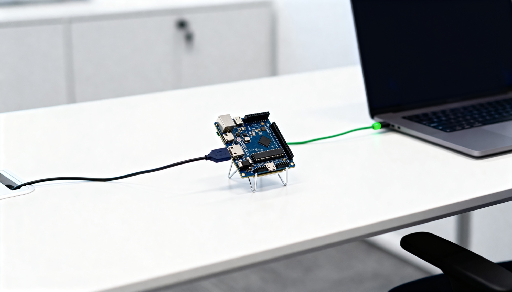

Build the cloud layer
your IoT needs.
Microservices, serverless architectures, real-time data pipelines, device APIs, AI/ML integration, and enterprise connectivity — cloud software built backwards from the IoT workload, not adapted from a generic enterprise template.


Cloud software designed
for connected data.
Most IoT cloud failures trace to architecture decisions made before the data volume was understood — a monolithic backend that can't handle the message rate, a pipeline that adds latency the device can't afford, a data model that makes analytics impossible after the fact. Meritech Cloud Software Development starts from the IoT workload: message ingestion rate, device count, data retention, latency ceiling, and the analytics decisions the data must support — then builds the cloud layer around those constraints.
Microservices where isolation matters. Serverless where event-driven scale matters. Managed cloud services where operational burden matters most. The architecture matches the workload — not a generic enterprise template adapted for IoT.
Cloud built for
the IoT workload.
Workload to live platform.
Message ingestion rate, device count, data retention window, latency ceiling, analytics goals, and enterprise integration points — every constraint captured before a line of architecture is drawn.
Microservices topology, pipeline architecture, data model, storage selection, and API contracts — designed against the workload, with the scalability and operational model specified before development begins.
Full-stack development with engineers across cloud backend, web, and mobile — validated through functional testing, system integration testing, and field testing under real device conditions.
CI/CD pipeline, monitoring, and ongoing performance optimisation as the fleet grows — so the cloud layer keeps pace with device count without architectural rework at every order-of-magnitude increase.
Is this the right fit?
Organisations building a connected product who need the cloud backend designed for the device workload — authentication, ingestion, command dispatch, and analytics — before hardware is committed and scale becomes a problem.
Operations teams running IoT deployments who need to turn sensor telemetry into real-time operational decisions — through monitoring dashboards, predictive maintenance models, or automated alerting built on live fleet data.
Engineering teams replacing aging monolithic IoT backends who need a migration path to scalable microservices or serverless architecture — without interrupting a live fleet and the operational processes that depend on it.
Before you build your
IoT cloud platform.
IoT data is only valuable
if the cloud can handle it.
Before the architecture is locked and the device fleet is live — get the cloud layer designed for the workload, built by engineers who understand both ends of the IoT stack.